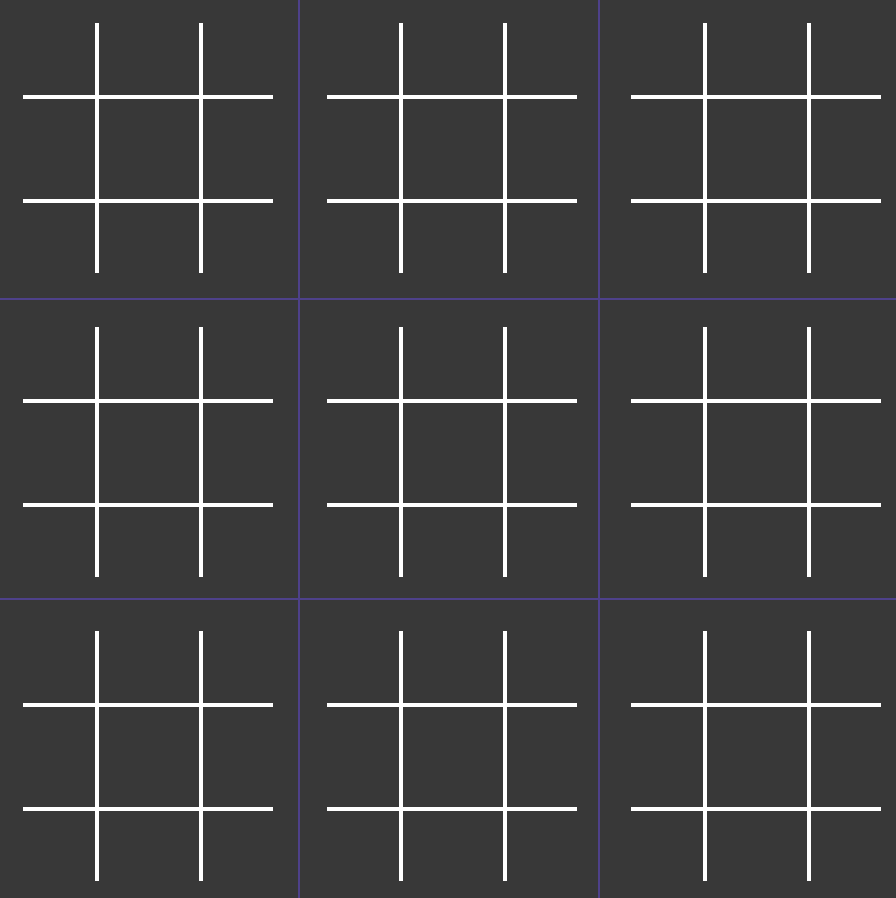

Super tic-tac-toe is a variant of the classic tic-tac-toe game: in each cell of the classic 3x3 grid, there's another 3x3 grid.

- The first player plays an X wherever they want on the board;
- Depending on where X played their move, O is forced to respond in the small board indicated by the previous move
(e.g. X plays in a center square of the top left 3x3 grid, O must play in the central 3x3 grid);
- The second player will do the same, now forcing X to play in a specific small board.
- Whenever a small board is completed, it counts as won by the player who would've normally won the tic-tac-toe game played inside it.
(if it's a tie, the small board stays unclaimed).
- If a player is forced to play in a completed small board, they can play wherever they want.
- The game ends either when a player wins the larger board, or when there are no more legal moves (in which case it's a draw).